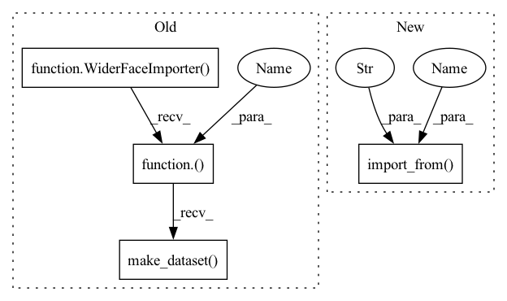

Pattern ID :38574
Before Change
with TestDir() as test_dir:
WiderFaceConverter.convert(source_dataset, test_dir, save_images=True)
parsed_dataset = WiderFaceImporter()(test_dir).make_dataset()
compare_datasets(self, target_dataset, parsed_dataset)
DUMMY_DATASET_DIR = osp.join(osp.dirname(__file__), "assets", "widerface_dataset")After Change
with TestDir() as test_dir:
WiderFaceConverter.convert(source_dataset, test_dir, save_images=True)
parsed_dataset = Dataset.import_from(test_dir , "wider_face" )
compare_datasets(self, target_dataset, parsed_dataset)
DUMMY_DATASET_DIR = osp.join(osp.dirname(__file__), "assets", "widerface_dataset")In pattern: SUPERPATTERN
Frequency: 3
Non-data size: 4
Instances Fragment ID: 110364724
Project Name: openvinotoolkit/datumaro
Commit Name: f489c176a6cbec4b0f749012b1c07c003922dfb6
Time: 2021-01-19
Author: anastasia.yasakova@intel.com
File Name: tests/test_widerface_format.py
M Class Name: WiderFaceFormatTest
N Class Name: WiderFaceFormatTest
M Method Name: test_can_save_dataset_with_non_widerface_attributes(1)
N Method Name: test_can_save_dataset_with_non_widerface_attributes(1)
M Parent Class: TestCase
N Parent Class: TestCase
M File Name: tests/test_widerface_format.py
N File Name: tests/test_widerface_format.py
M Start Line: 101
M End Line: 103
N Start Line: 107
N End Line: 109
Before Change
),
])
with TestDir() as test_dir :
WiderFaceConverter.convert(source_dataset, test_dir, save_images=True)
parsed_dataset = WiderFaceImporter()(test_dir).make_dataset()
compare_datasets(self, source_dataset, parsed_dataset)
def test_can_save_dataset_with_non_widerface_attributes(self):After Change
),
], categories=[])
with TestDir() as test_dir :
WiderFaceConverter.convert(source_dataset, test_dir, save_images=True)
parsed_dataset = Dataset.import_from( test_dir, "wider_face" )
compare_datasets(self, source_dataset, parsed_dataset)
def test_can_save_dataset_with_non_widerface_attributes(self): Fragment ID: 110364725
Project Name: openvinotoolkit/datumaro
Commit Name: f489c176a6cbec4b0f749012b1c07c003922dfb6
Time: 2021-01-19
Author: anastasia.yasakova@intel.com
File Name: tests/test_widerface_format.py
M Class Name: WiderFaceFormatTest
N Class Name: WiderFaceFormatTest
M Method Name: test_can_save_dataset_with_no_subsets(1)
N Method Name: test_can_save_dataset_with_no_subsets(1)
M Parent Class: TestCase
N Parent Class: TestCase
M File Name: tests/test_widerface_format.py
N File Name: tests/test_widerface_format.py
M Start Line: 70
M End Line: 72
N Start Line: 76
N End Line: 78
Before Change
DatasetItem(id="4", subset="val", image=np.ones((8, 8, 3))),
])
with TestDir() as test_dir :
WiderFaceConverter.convert(source_dataset, test_dir, save_images=True)
parsed_dataset = WiderFaceImporter()(test_dir).make_dataset()
compare_datasets(self, source_dataset, parsed_dataset)
def test_can_save_dataset_with_no_subsets(self):After Change
"label_" + str(i) for i in range(3)),
})
with TestDir() as test_dir :
WiderFaceConverter.convert(source_dataset, test_dir, save_images=True)
parsed_dataset = Dataset.import_from( test_dir, "wider_face" )
compare_datasets(self, source_dataset, parsed_dataset)
def test_can_save_dataset_with_no_subsets(self): Fragment ID: 110364726
Project Name: openvinotoolkit/datumaro
Commit Name: f489c176a6cbec4b0f749012b1c07c003922dfb6
Time: 2021-01-19
Author: anastasia.yasakova@intel.com
File Name: tests/test_widerface_format.py
M Class Name: WiderFaceFormatTest
N Class Name: WiderFaceFormatTest
M Method Name: test_can_save_and_load(1)
N Method Name: test_can_save_and_load(1)
M Parent Class: TestCase
N Parent Class: TestCase
M File Name: tests/test_widerface_format.py
N File Name: tests/test_widerface_format.py
M Start Line: 52
M End Line: 54
N Start Line: 58
N End Line: 60